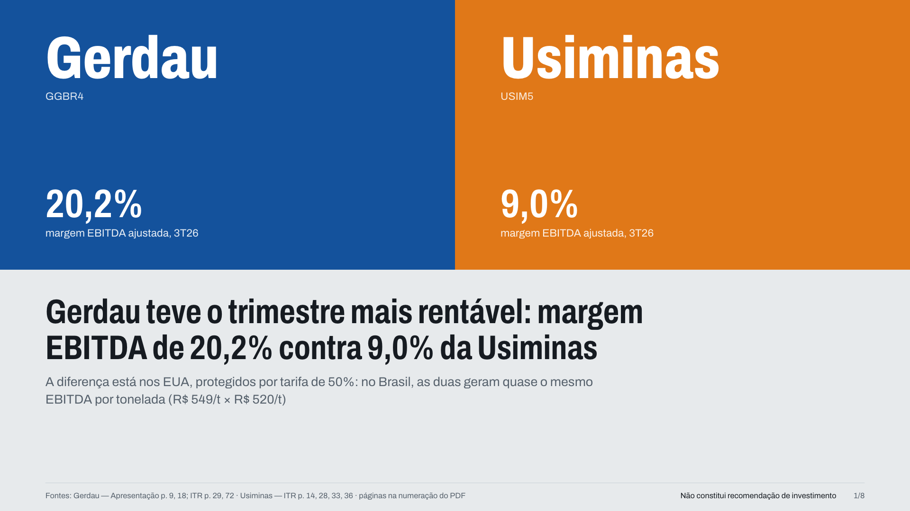
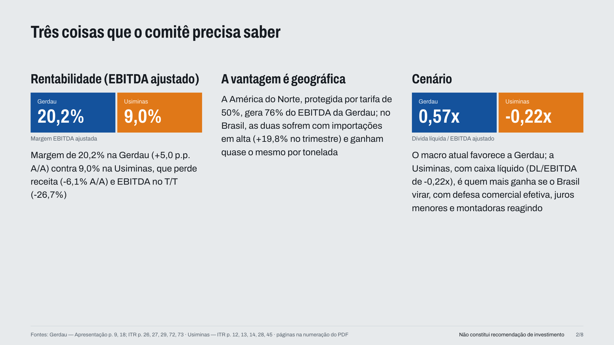
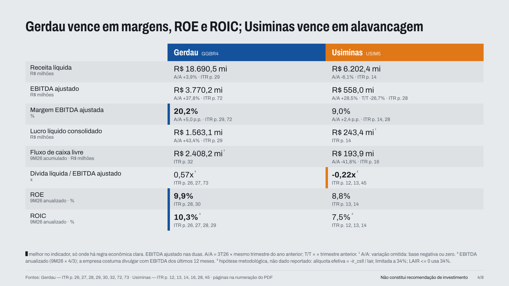
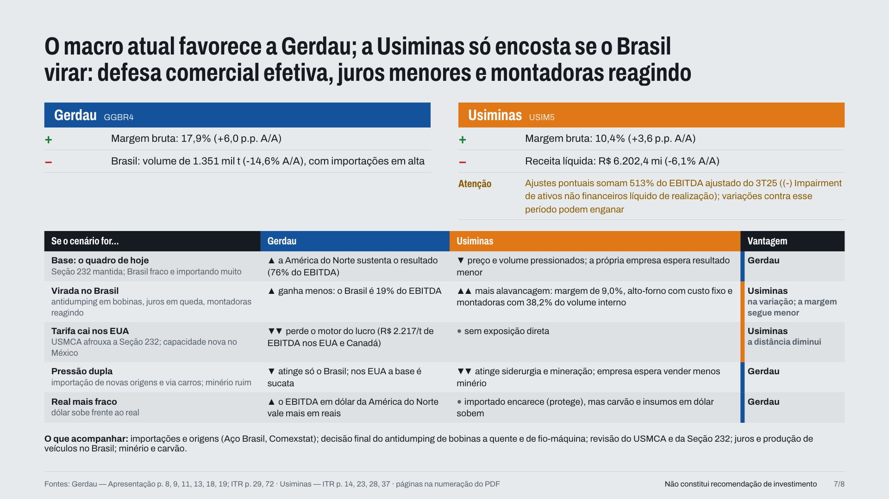

Como usar o projeto, passo a passo. Resultados do 3T26.
Um número no lugar errado muda a conclusão do slide. Os quatro riscos:
Passo 1 de 5
Os ITRs e as apresentações das duas empresas já vêm na pasta data/. Só precisa de Python 3.
Passo 2 de 5
ENTREGUE: entrega/apresentacao_gerdau_x_usiminas_3T26.html
Passo 3 de 5
Páginaa do leitor de PDF, não a impressa na folha.
Trechocopiado letra por letra da página.
Arquivosficam em metricas/, um por documento.
Passo 4 de 5
Um erro real: o 156 do nome da norma foi lido como EBITDA. Agora o verificador exige a coluna do 3T26. Um erro trava o pipeline.
Passo 5 de 5




Oito slides, uma mensagem em cada.
A página do ITR embaixo de cada número.
Setas do teclado navegam; Ctrl+P gera o PDF.
Coloque os PDFs em data/itrs e data/apresentacoes e troque --a --b --tri.
Se faltar um arquivo de fatos, o pipeline para e imprime o prompt pronto para o Claude extrair.
github.com/GabrielMM47/claude-lab-case3
Trabalho acadêmico, Claude Lab PUC-Rio. Não constitui recomendação de investimento.